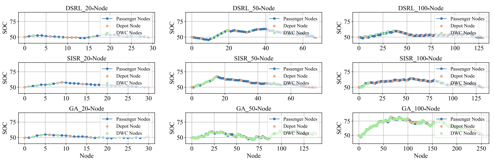
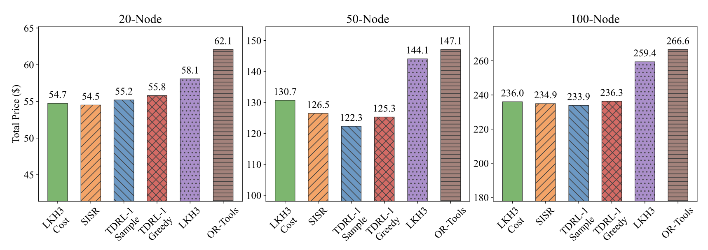
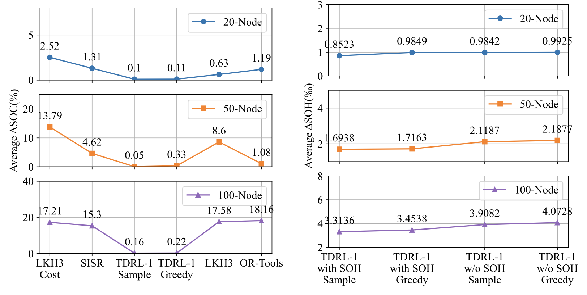

Towards Continuous Operation of Autonomous Vehicles
Minh Kieu, PhD
TARLab & Transportation Research Centre
University of Auckland, New Zealand
Lab website:
https://transportanalytics.nz
Wirelessly Powered Transport Infrastructure for a Low-carbon Future (2021-2026)
MBIE Endeavour Programme
Charging of Electric Vehicles: Wired or Wireless
Wireless: Static or Dynamic
5-year research programme between Transport, Electrical, Science and Bussiness School at the University of Auckland
In collaboration with ASPIRE (5-year NSF Research programme): Utah State, Purdue, Colorado, Virginia Tech, etc https://aspire.usu.edu/
Can Autonomous Vehicles operate continuously now?
How does routing works?


Deep Reinforcement Learning with Heterogeneous Multi-head attention mechanism

Wang Y, Kieu M, Ranjitkar P. Enabling Continuous Operation of Shared Autonomous Vehicles With Dynamic Wireless Charging. IEEE Trans Intell Transp Syst. 2024;25(11):18805–14. doi:10.1109/TITS.2024.3416412

What if we are stuck on traffic?

Split to two levels now to deal with traffic congestion
Also consider battery state-of-health now
Our algorithm vs other AIs


Continous AV project (with traffic congestion): Publications
Wang Y, Kieu M, Zhang Z, Ge YE, Ranjitkar P. A Novel Deep Reinforcement Learning Framework for Shared Autonomous Vehicles Pickup, Delivery, and Charging Problem. IEEE Internet Things J. 2025;12(17):36551–61. doi:10.1109/JIOT.2025.3582757
Wang Y, Kieu M, Ranjitkar P, Ge YE. Towards continuous and on-time operation of electric shared autonomous vehicles with dynamic wireless charging. Transp Res Part C Emerg Technol. 2026;187:105625. doi:10.1016/j.trc.2026.105625
Wang Y, Kieu M, Ceder A (Avi), Ranjitkar P. A review of static and dynamic charging in electric vehicle routing: Transition, algorithms and future directions. Swarm Evol Comput. 2025;98:102105. doi:10.1016/j.swevo.2025.102105
Wang Y, Kieu M. Optimising pre-disaster evacuation strategies using shared autonomous vehicles: A dynamic and stochastic approach. Transp Res Part C Emerg Technol. 2026;183:105437. doi:10.1016/j.trc.2025.105437
Guided platoon merging with AVs
Broader Considerations
Regulation
Who is liable when there is no driver?
Infrastructure
Can the charging network support continuous operation?
Equity
Who gets served and who gets left out?
AVs in New Zealand Law
New Zealand has no AV-specific legislation. The Land Transport Act 1998 was drafted before vehicle automation was a consideration.
The law does not explicitly require a driver
Non-compliant vehicles enter via case-by-case Section 168D in Land Transport Act — workable for trials, not sustainable for a larger fleet of automated vehicles.
Meanwhile the UK, Germany, Japan and Australian states have enacted dedicated AV frameworks that shift liability from the person behind the wheel to the driving system.
Sources: Ministry of Transport, Automated Vehicles Work Programme; NZTA Waka Kotahi.
ACC and Manufacturer Liability
The Accident Compensation Act (s 35) covers personal injury on a no-fault basis and bars suing for compensatory damages.
If a defective driving system made overseas causes a crash here, the NZ public scheme pays
Other jurisdictions are moving liability onto the automated driving system
The Charging Gap
New Zealand has one of the lowest charger-to-EV ratios in the OECD
Dedicated Lanes for AVs
Reallocating scarce road space away from general traffic, buses and cycling
High capital cost for a fleet that barely exists in NZ yet
Who benefits and who pays? Risk of building for vehicles most people don't have
Equity in AV Routing and Service
Routing and fleet algorithms optimise cost, energy and demand density. Equity is rarely in the objective function.
Demand-following fleets concentrate service where trips are dense and profitable
Towards Continuous Operation of Autonomous Vehicles
Thank you!
Questions?
Lab website:
https://transportanalytics.nz